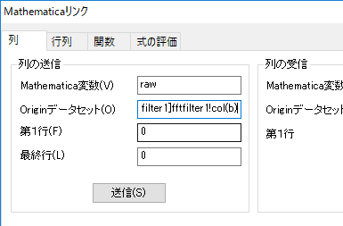
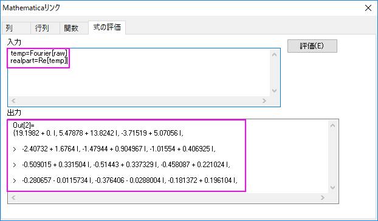
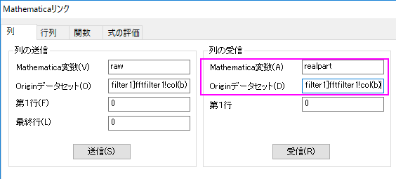
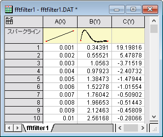
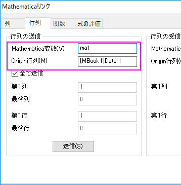
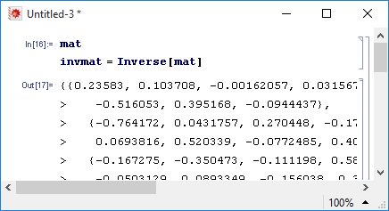
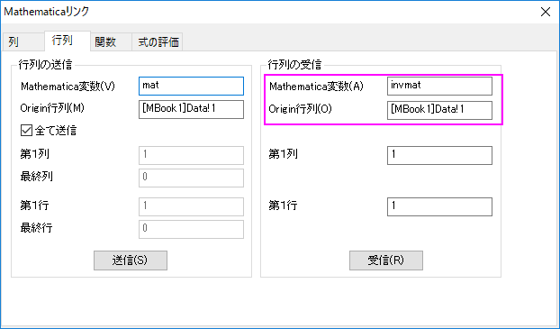
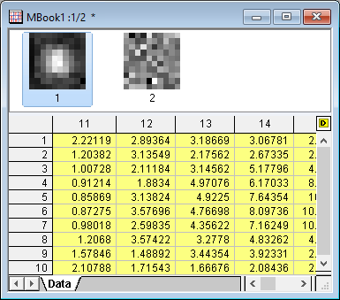

Mathematicaリンクを使う手順とその例
Mathematica-Procedure-EX
このページでは、OriginのMathematicaリンクを使う手順とその例について説明します。ここで使っているバージョンは、Mathematica 10.0です。
OriginでMathematicaリンクを起動する
このツールを起動する前に、Originのkernel Osequencer.exe にリンクするように、Mathematica のKernel環境設定が必要です。詳細は、このページを参照して下さい。
サンプル
サンプルを見る前に、この前のセクションの手順に従ってMathematicaリンクを起動して下さい。
サンプル 1
このサンプルでは、ワークシートデータをMethematicaに送ったり、Methematicaからデータを受け取ったりします。
- システムのデフォルトテーマを使って、データ<Origin Installation Directory>/Samples/Signal Processing/fftfilter1.DAT を新規ワークシートにインポートし、ワークブック名とワークシート名が fftfilter1というファイル名に変更されているかを確認します。
- Mathematicaリンクダイアログの列タブを開きます。列の送信グループで、Mathematica変数をraw、 Orginデータセットを [fftfilter1]fftfilter1!col(b) に設定します。
- 
- 送信ボタンをクリックし、Mathematicaにデータの第2行を送信します。
- 式の評価タブに行き、下記の2行を入力します。
- temp=Fourier[raw]
- realpart=Re[temp]
- 評価ボタンを押し、結果を得ます。
- 
- ワークシートに行き、標準ツールバーの列の追加ボタンをクリックし、ワークシートに列Cを追加します
- Mathematicaリンクダイアログに戻り、列タブを開きます。列の受信グループを下記のように設定します。
- Mathematica変数: realpart
- Originデータセット: [fftfilter1]fftfilter1!col(c)[fftfilter1]fftfilter1!col(c)
- 
- 受信ボタンをクリックすると、ワークシートの列Cに結果が表示されます。
- 
サンプル 2
このサンプルは、行列データをMethematicaに送ったり、Methematicaからデータを受け取ったりします。
- 行列<Origin Installation Directory>/Samples/Matrix Conversion and Gridding/2D Gaussian.ogmを開きます。
- Mathematicaリンクダイアログの行列タブを開きます。列の送信グループで、Mathematica変数をmat、Origin行列を[MBook1]Data!1 と設定します。
- 
- 送信 ボタンをクリックします。
- 開始されない場合、Methematicaを開き、新しいノートブックを作成します。メニューから評価： Notebook's Kernelを選択し、kernel "OSequencer"が選択されていることを確認してください。これでMathematicaの現在のノートブックとOriginの接続が確立されます。
- 次のスクリプトを入力します。
invmat = Inverse[mat]
実行します。
- 
- Originに戻ります。新しい行列オブジェクトをデータ表列シートに追加します。データ行列シートの右上にあるDアイコンをクリックして、追加を選択して、新しいオブジェクトを追加します。
- Mathematicaリンクダイアログをアクティブにして、行列の受信グループを下記のように設定します。
- Mathematica変数: invmat
- Origin 行列:[MBook1]Data!2
- 
- 受信ボタンをクリックすると、元の行列が逆行列に置き換わります。
- 
サンプル 3
このサンプルでは、Mathematicaでユーザ定義関数を作成してから、作図します。